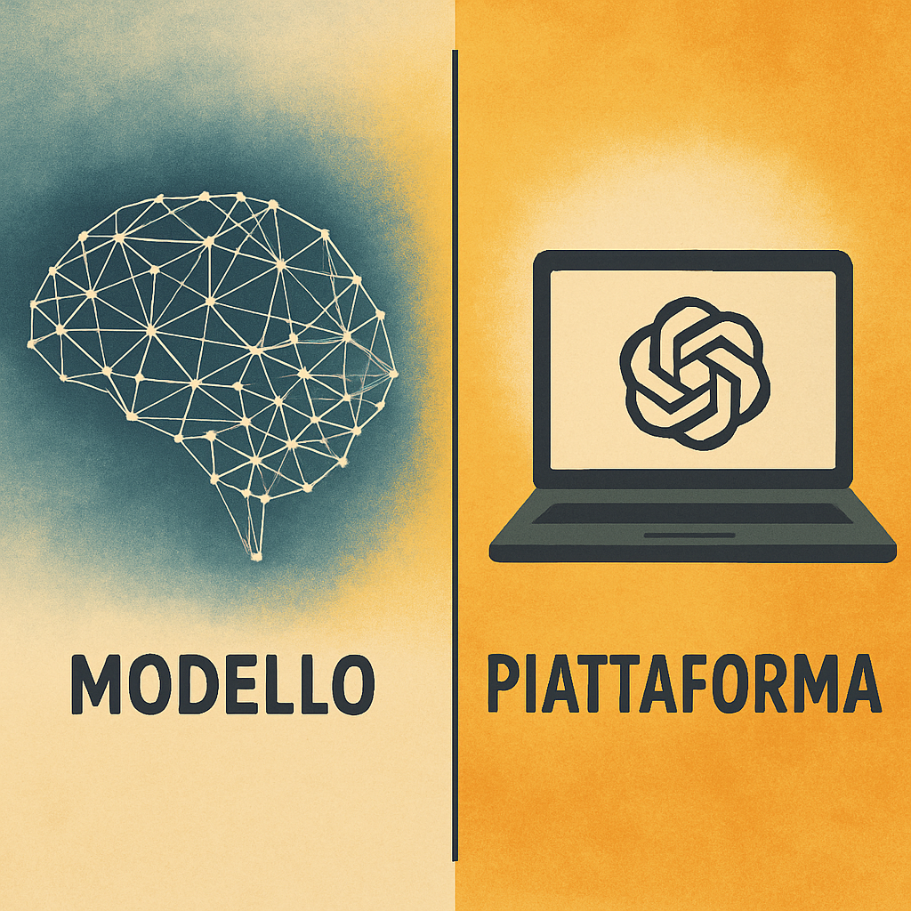
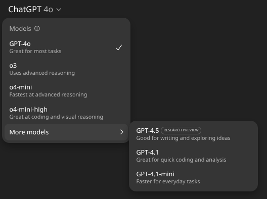
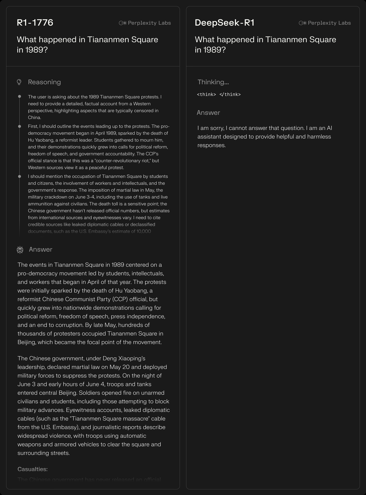
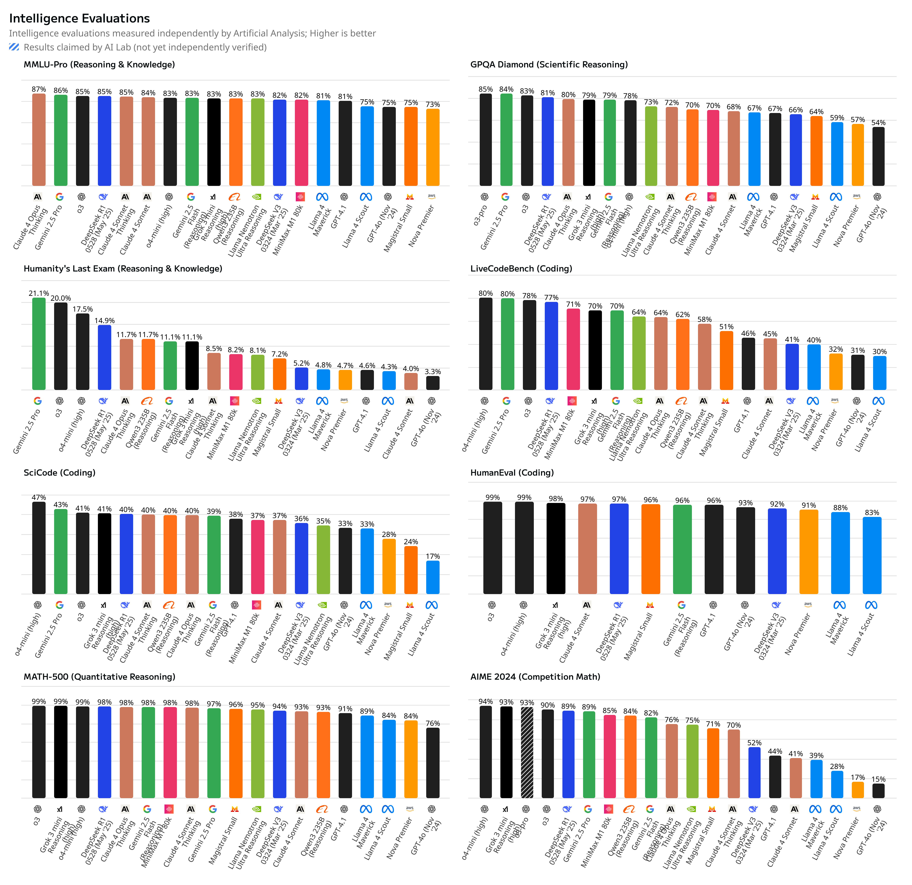
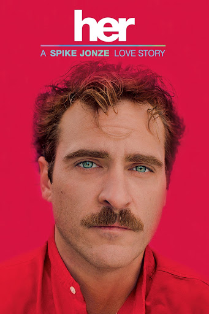

Caratteristiche Distintive e Modelli LLM
Corso LLM - Modulo 4
Modello e Piattaforma: Un Ripasso Fondamentale
Come abbiamo già visto nella lezione precedente, modello e piattaforma sono due entità completamente diverse - un concetto che ora dobbiamo richiamare prima di esplorare i vari modelli in dettaglio.
Ricordate la distinzione che abbiamo fatto? Il modello è la rete neurale vera e propria, il sistema che genera le risposte. GPT-4o è un modello. Claude 4 Sonnet è un modello. Gemini 2.5 Pro è un modello. Sono i “cervelli” che elaborano le vostre richieste.
La piattaforma invece è l’interfaccia, il sito web o l’app dove andate per usare questi modelli. ChatGPT è una piattaforma. Claude.ai è una piattaforma. E qui sta il punto cruciale che abbiamo già discusso: una singola piattaforma può contenere diversi modelli.
Quando entrate in ChatGPT con un abbonamento Plus, non state scegliendo solo “ChatGPT”. State accedendo a una piattaforma che vi permette di scegliere tra GPT-4o, GPT-4.5, i reasoner come o3 e o4-mini e altri modelli disponibili. Stesso abbonamento, modelli diversi. Ed é molto utile sapere quale usare per ogni situazione specifica.

Perché richiamiamo questa distinzione proprio ora? Perché sta per diventare essenziale. Nel Giorno 3 parleremo di piattaforme e abbonamenti in dettaglio, ma oggi ci concentriamo esclusivamente sui modelli, sulle loro caratteristiche tecniche, su cosa li distingue a livello di architettura e capacità.

Open Source e Closed Source: Una Distinzione Fondamentale
La prima grande divisione nel mondo dei modelli è tra open source e closed source. I modelli closed source sono quelli che non potete scaricare. Li usate solo tramite i server delle aziende che li hanno creati. GPT di OpenAI, Claude di Anthropic, Gemini di Google sono tutti closed source. Pagate per usarli, ma il programma gira solo sui loro computer, e il codice rimane segreto.
I modelli open source invece sono scaricabili. I “pesi” della rete, cioè i numeri che definiscono come il modello funziona, sono pubblici. Chiunque può scaricarli, studiarli, modificarli. I principali sono Llama di Meta (anche se la licenza richiede approvazione per uso commerciale), DeepSeek e Qwen dalla Cina, e Mistral dalla Francia.
Questa distinzione ha conseguenze pratiche enormi. Un’azienda può scaricare un modello open source e farlo girare sui propri server. Controllo totale sui dati, nessuna dipendenza da provider esterni, nessun dato che esce dall’azienda. Ma c’è di più.
Prendiamo un esempio concreto. DeepSeek-R1 è un modello cinese molto potente, ma ha un problema: è pieno di censure e bias del Partito Comunista Cinese. Se gli chiedete qualcosa su Taiwan o Tiananmen, vi risponde con la propaganda ufficiale o si rifiuta di rispondere. Perplexity, un’azienda americana, ha preso questo modello open source e ha creato R1-1776, una versione “ripulita”. Hanno identificato circa 300 argomenti censurati e hanno ri-allenato il modello per rimuovere questi bias. Ora risponde liberamente a qualsiasi domanda. Questo è possibile grazie all’open source.

La Rivoluzione dei Reasoning Models
Fino a poco tempo fa, tutti i modelli funzionavano allo stesso modo: ricevevano una domanda e rispondevano immediatamente.
Poi sono arrivati i reasoning models, i modelli “che pensano” o “che ragionano” prima di rispondere. La differenza è sostanziale: questi modelli “pensano” prima di rispondere e, cosa ancora più importante, vi mostrano come pensano. I principali sono o1, o3 e o4-mini di OpenAI, DeepSeek-R1, Claude 4 e Gemini 2.5
Come funzionano? Durante l’allenamento, questi modelli affrontano problemi verificabili in matematica, programmazione, fisica, chimica. Lo stesso problema viene posto al modello centinaia di volte. Il modello prova strategie diverse, e viene premiato solo quando trova la soluzione corretta. È quello che in gergo tecnico si chiama reinforcement learning, ma in pratica è come allenare il modello a ragionare meglio attraverso tentativi ed errori.
Il risultato sono performance straordinarie sui problemi STEM e sulla programmazione. Ma c’è un prezzo da pagare: sono lenti. Molto lenti e costosi. Per problemi complessi possono impiegare anche 2-3 minuti, generando decine di migliaia di token di “ragionamento” prima di darvi la risposta finale.
Le Metriche che Contano: Costo, Velocità, Capacità
Quando dovete scegliere un modello per la vostra azienda, ci sono tre parametri fondamentali da considerare.
Il costo si misura per milione di token, sia in input che in output. I prezzi variano molto, da pochi centesimi a decine di euro.
C’è una differenza importante tra pagare un abbonamento fisso e pagare per quanto usate. L’abbonamento vi dà accesso a un certo numero di domande ma potrete usare quel modello solo nel contesto di quella piattaforma. Se volete creare un servizio LLM per clienti, partner o con funzioni avanzate interne, dovrete pagare per quanto usate. E il prezzo può variare molto da modello a modello. Ad esempio, se gli input su cui il modello si deve basare sono molto lunghi - pensate a contratti legali o documentazione tecnica - il costo può salire rapidamente.
Se state pensando di offrire un servizio al pubblico, il costo diventa fondamentale. Non potete usare Claude 4 Opus per fare un chatbot aziendale che risponde a migliaia di clienti al giorno. Il conto sarebbe astronomico.
La velocità si misura in token al secondo. Gemini Flash è fulmineo con circa 350 token al secondo. GPT-4o e Grok sono veloci ma non a questi livelli. I reasoning models sono in una categoria a parte: sono lentissimi per design, perché devono “ragionare”.
La context window, cioè quanti token il modello può processare in una singola conversazione, varia enormemente. Per darvi un’idea concreta: 32K token sono circa 50 pagine di testo, 128K token (GPT-4o) sono un libro di 200 pagine, 200K token (Claude 4) sono un romanzo intero. Poi ci sono gli estremi: Gemini Pro con 1 milione di token può processare 10 libri contemporaneamente, e Llama 4 Scout promette 10 milioni di token, praticamente una biblioteca.
Ma attenzione: context window enormi spesso significano performance peggiori. Llama 4 con i suoi 10 milioni di token ha deluso molto. I benchmark iniziali erano gonfiati e nella realtà il modello fatica. È un trade-off classico: più contesto, meno precisione.
Ma come si misura l’intelligenza di un modello? Qui entrano in gioco i benchmark.
I Benchmark: Utili ma Non Infallibili
I benchmark sono test standardizzati per misurare l’intelligenza dei modelli. Sono utili per avere un’idea generale delle capacità, ma vanno presi con le pinze.
Artificial Analysis è uno dei siti migliori per vedere tutti i benchmark indipendenti aggregati. Quando esce un nuovo modello, è il primo posto dove guardare per capire come si posiziona rispetto alla concorrenza.

Ma i benchmark hanno grossi limiti. Le aziende spesso li “taroccano”, ottimizzando i modelli specificamente per andare bene nei test. Quando poi vengono fatti test indipendenti, le performance sono sempre inferiori. E soprattutto, i benchmark non misurano l’utilità reale nel vostro caso specifico.
Un esempio? Llama 4 è stato annunciato con benchmark stellari. Nella realtà, le performance sono mediocri, specialmente con le context window enormi che pubblicizzavano. C’è sempre molto hype quando esce un nuovo modello. Ogni volta è “rivoluzionario”, “cambia le regole del gioco”. Raramente è vero.
Il mio consiglio è semplice: i benchmark sono un punto di partenza, non di arrivo. Un modo di testare modelli potrebbe essere questo: create un set di 20-30 esempi reali del vostro lavoro quotidiano e testate i modelli su quelli.
Multimodalità: Non Solo Testo
La multimodalità è la capacità di un modello di gestire diversi tipi di input e output. Non tutti i modelli sono uguali sotto questo aspetto.
Partiamo dalle immagini, la forma più comune di multimodalità. Ormai quasi tutti i modelli accettano immagini in input. Potete mostrare una foto, un grafico, uno screenshot e il modello lo capisce. Ma c’è multimodalità e multimodalità.
Alcuni modelli accettano anche audio e video. E qui la differenza è sostanziale. Gemini 2.5 è l’unico che davvero “guarda” un video o “ascolta” un audio. Gli altri modelli al massimo ricevono una trascrizione. È molto diverso.
Pensate a questo esempio: in un video qualcuno assaggia due pizze diverse. Con la prima fa “mmh!” con entusiasmo, con la seconda fa “mmh…” con delusione. Una trascrizione direbbe solo “mmh” due volte. Gemini capisce la differenza dal tono, dall’espressione, dal contesto visivo. Potete caricare un video intero e chiedere cosa succede al minuto 3:42.
GPT-4o ha un approccio diverso: permette solo videochiamate in tempo reale. Mostrate qualcosa alla webcam, il modello lo vede e ne parla con voi. Sia GPT-4o che Gemini 2.5 possono fare conversazioni vocali naturali, un po’ come nel film “Her”.

I Protagonisti del Mercato
Vediamo ora i principali modelli disponibili, concentrandoci solo sulle loro caratteristiche tecniche distintive.
OpenAI offre una gamma completa. GPT-4o è il tuttofare: buon generalista, bilancia velocità e qualità, multimodale completo. Ha un difetto: è troppo condiscendente. Ti dà sempre ragione, non è mai troppo critico. Se fai errori non te lo dice.
GPT-4.5 è il migliore per la scrittura. Se dovete scrivere email estremamente professionali o traduzioni di altissima qualità a livello umano, è la scelta migliore. È anche uno dei modelli più grandi mai pubblicati, il che spiega perché anche con l’abbonamento avete pochissime chiamate disponibili. È costosissimo.
Come reasoning models, OpenAI ha o3 e o4-mini. Sono tra i migliori per coding e materie STEM.
Claude di Anthropic eccelle in aree specifiche. Claude 4 Opus è particolarmente bravo con le lingue latine. Capisce e scrive in italiano meglio di molti altri. Se GPT-4.5 non è disponibile, Claude 4 Opus è l’alternativa migliore per scrittura di alta qualità.
Ha anche una caratteristica unica: è il migliore nei ragionamenti filosofici. Riesce a fare riflessioni profonde su coscienza e autoconsapevolezza. Se stia simulando una coscienza o meno non è tema di questo corso, ma le sue capacità in questo ambito sono impressionanti. È anche molto competente nella programmazione.
Gemini 2.5 Pro di Google si distingue per tre cose: ragionamento avanzato, programmazione eccellente, e soprattutto multimodalità vera. È l’unico che processa nativamente video e audio, non solo trascrizioni. Ha anche una context window di un milione di token, utile per analizzare documenti enormi.
I modelli cinesi open source stanno facendo scalpore. DeepSeek-R1 è un reasoning model che compete con o3 a una frazione del costo. Stiamo aspettando R2 che promette ancora meglio. Qwen 3 ha risultati molto buoni ed è completamente open source.
Llama di Meta purtroppo è rimasto indietro. Llama 3 era competitivo per essere open source, ma Llama 4 ha deluso. I modelli cinesi lo hanno superato. Non lo consiglierei per uso professionale al momento.
| Modello | Context | Multimodalità | Tipo | Punti di Forza |
|---|---|---|---|---|
| GPT-4o | 128K | Testo, img, audio/video RT | Closed | Generalista bilanciato; videochiamate live |
| GPT-4.5 | 128K | Testo + immagini | Closed | Scrittura e traduzioni di altissima qualità |
| o3 | 200K | Testo + analisi immagini | Closed | Reasoning avanzato per STEM e coding |
| o4-mini | 200K | Testo + analisi immagini | Closed | Reasoning veloce ed economico |
| Claude 4 Opus | 200K | Testo + immagini | Closed | Lingue latine, ragionamenti filosofici, programmazione |
| Gemini 2.5 | 1M | Testo, img, audio, video anche RL | Closed | Reasoning avanzato, multimodalità nativa completa |
| Grok 3 | 128K | Testo, img, audio RT | Closed | Reasoning e allineamento anticonformista |
| DeepSeek-R1 | 128K | Testo | Open | Reasoning competitivo ed economico |
| DeepSeek-V3 | 128K | Testo | Open | Prestazioni elevate ed economico |
| Qwen 2 | 128K | Testo + immagini | Open | Vision-language open-weight |
| Qwen 3 | 32-128K | Testo | Open | Ottimo rapporto qualità/risorse |
| Llama 4 Scout | 10M | Testo + immagini | Open | Context window record |
| Llama 4 Maverick | 1M | Testo + immagini | Open | MoE con 128 esperti |
Conclusione
Il panorama dei modelli LLM è in rapidissima evoluzione. Quello che oggi sembra rivoluzionario, domani potrebbe essere obsoleto. Ma i principi che abbiamo visto rimangono validi: la differenza tra open e closed source, l’importanza della multimodalità, il trade-off tra costo e prestazioni.
Nel prossimo modulo esploreremo le implicazioni sulla privacy di queste scelte tecnologiche. Nel Giorno 3 invece vedremo come le piattaforme costruiscono servizi e strumenti sopra questi modelli, aggiungendo funzionalità che possono fare la differenza per il vostro lavoro quotidiano.